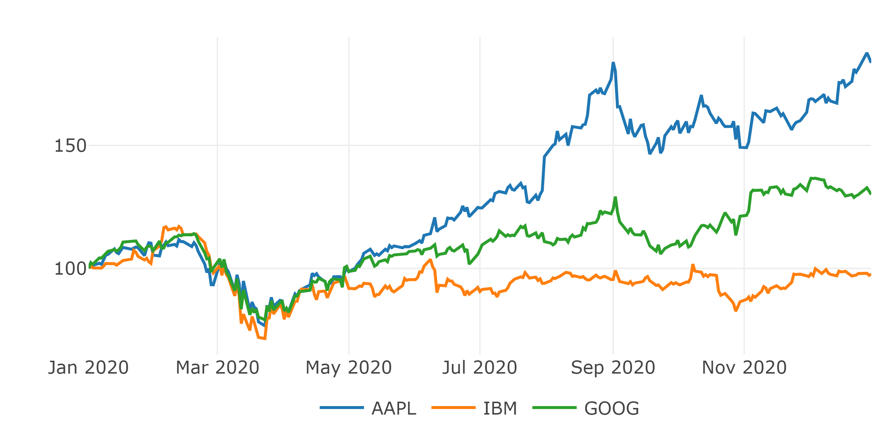

Chapter 6 Challenges of Passiv Investing
This Chapter will analyse two common challenges of Passiv-Investing and create simple examples to test the PSO. The first one is the mean-variance portfolio (MVP) from the modern portfolio theory of Markowitz which is simply said an optimal allocation of assets regarding risk and return. The second challenge is the index-tracking-problem which tries to construct a portfolio which has a minimal tracking error to a given benchmark.
6.1 Mean-variance portfolio (MVP)
Markowitz has shown that diversifying the risk on multiple assets will reduce the overall risk of the portfolio. This result was the beginning of the widely used modern portfolio theorie which uses mathematical models to archive portfolios with minimal variance for a given return target. All these optimal portfolios for a given return target are called efficient and create the efficient frontier.
6.1.1 MVP
Let there be \(N\) assets and its returns on \(T\) different days which creates a return matrix \(R \in \mathbb{R}^{T \times N}\). Each element \(R_{t,i}\) contains the return of the \(i\)-th asset on day \(t\). The covariance matrix of the returns is \(\textstyle\sum \in \mathbb{R}^{N \times N}\) and the expected returns are \(\mu \in \mathbb{R}^{N}\). The MVP with risk aversion parameter \(\lambda \in [0,1]\) like shown in (Maringer 2005) can be formalized as follows: \[\begin{equation} \underset{w}{minimize} \ \ \ \lambda \ w^T \textstyle\sum w - (1-\lambda) \ \mu^T w \tag{6.1} \end{equation}\]
The risk aversion parameter \(\lambda\) defines the trade-off between risk and return. With \(\lambda = 1\), the minimization problem only contains the the variance term and so on results in a minimum variance portfolio and \(\lambda = 0\) transforms the problem to a minimization of the negative expected returns so on results in a maximum return portfolio. All possible \(\lambda \in [0, 1]\) represent the efficient frontier.
6.1.2 MVP example
All possible MVPs combined create the efficient frontier, that is analyzed in this section without going into the details of its calculation. This example uses three assets (equitys: IBM, Google, Apple) and calculates the solution of \(\ref{eq:MVP}\) for each \(\lambda\). First of all are the daily returns of these three assets are loaded from the year 2020.
returns <- buffer(
get_yf(tickers = c("IBM", "GOOG", "AAPL"), from = "2020-01-01", to = "2020-12-31")$returns,
"CPI_3_assets"
)The cumulated daily returns are:

The expected daily returns and the covariance matrix for the 3 assets can be calculated with:
p0("estimation of expected daily returns")## [1] "estimation of expected daily returns"mu <- sapply((1+returns), prod)^(1/nrow(returns))-1
mu## AAPL IBM GOOG
## 0.0024166167 -0.0000952478 0.0010448549p0("estimation of positiv definite covariance matrix")## [1] "estimation of positiv definite covariance matrix"cov <- as.matrix(nearPD(cov(returns))$mat)
cov## AAPL IBM GOOG
## AAPL 0.0008665678 0.0004378721 0.0005361398
## IBM 0.0004378721 0.0006646758 0.0004100227
## GOOG 0.0005361398 0.0004100227 0.0005849202These are all the necessary data to solve the MVP (6.1) with \(\lambda \in \{0.01, 0.02, ..., 0.99, 1\}\). All 100 portfolios are calculated by solving a quadratic minimization problem with long only constraint.
portfolios <- data.frame()
mu_and_var <- NULL
for(lambda in seq(0.01,1, 0.01)){
mat <- list(
Dmat = lambda * cov,
dvec = (1 - lambda) * mu,
Amat = t(rbind(
rep(1, ncol(returns)), # sum up to 1
diag(1, nrow=ncol(returns), ncol=ncol(returns)) # long only
)),
bvec = c(
1, # sum up to 1
rep(0, ncol(returns)) # long only
),
meq = 1
)
qp <- solve.QP(Dmat = mat$Dmat, dvec = mat$dvec, Amat = mat$Amat, bvec = mat$bvec, meq = mat$meq)
port <- xts(returns %*% qp$solution, order.by=index(returns))
mu_and_var <- rbind(
mu_and_var,
data.frame("lambda" = lambda, "mu" = mu %*% qp$solution, "sd" = sqrt(t(qp$solution) %*% cov %*% qp$solution))
)
portfolios <- rbind(
portfolios,
qp$solution
)
}
portfolios <- data.frame(portfolios)
colnames(portfolios) <- colnames(returns)The resulting daily returns and standard deviation are transformed to annual returns and standard deviation and are plotted to create the efficient frontier:
# annualize
mu_and_var$mu <- (1+mu_and_var$mu)^250-1
mu_and_var$sd <- mu_and_var$sd * sqrt(250)
plot_ly(data = mu_and_var) %>%
add_lines(y = ~mu, x = ~sd, name = "efficient frontier") %>%
add_trace(x = ~sd, y=~mu, mode="markers", name = "lambda steps") %>%
layout(
title = "3-Asset MVP",
yaxis = list(range=c(min(mu_and_var$mu)*0.9, max(mu_and_var$mu)*1.1)),
xaxis = list(range=c(min(mu_and_var$sd)*0.95, max(mu_and_var$sd)*1.05)),
margin = list(
l = 10,
r = 10,
b = 70,
t = 50,
pad = 4
)
) %>%
html_save()
The portfolio compositions for each \(\lambda\) are:
p <- plot_ly(type="bar") %>% layout(title="Portfolio compositions", barmode="stack", xaxis = list(title="lambda", autorange = "reversed"), yaxis = list(title="wgt"))
for(i in 1:ncol(portfolios)){
p <- p %>%
add_trace(x=seq(0.01,1, 0.01), y=portfolios[, i], name = colnames(portfolios)[i])
}
p %>% html_save()
6.2 Index-tracking portfolio (ITP)
Indices are asset baskets that are used to track the performance of a specific asset group. The well-known Standard and Poor’s 500 index (short: S&P 500), for example, tracks the top 500 stocks in the United States. All indices are not investible and only serve to visualize the performance of these asset groups without incurring transaction costs. Asset managers use such indices as benchmarks to compare the performance of their funds. Each fund has its own benchmark, which contains roughly the same assets that the manager could purchase. If the fund underperforms its benchmark, it may be an indication that the fund manager made a poor decision. That is why all fund managers strive to outperform their benchmarks through carefully chosen investments. The past has proven that this is rearly achived with activ managemnt after costs (Desmond Pace and Grima 2016). This is the reason why passiv managed funds with the goal to track there benchmarks are becoming more frequent. This is why passively managed funds with the purpose of tracking their benchmarks are becoming more common. This can be accomplished through either full or sparse replication. In most circumstances, using a full replication that achieves the exact performance is not achievable, because not all assets in an index are investable. And, if so, it would be unwise because benchmarks with numerous indexes can contain over ten thousand separate assets, resulting in a massive amount of transaction costs. A sparse replication of the performance is the most prevalent approach. To do so, the portfolio manager must define his benchmark, which should overlap with his fund’s investing universe. Following that, he will reduce this universe using investor principles such as liquidity and availability. Now he can begin to optimize a portfolio, taking into account the investor constraints, in order to match the benchmark performance. Typically, this is accomplished by lowering the variance between the ITP’s daily returns and the benchmark:
\[ minimize \ \ Var(r_{p}-r_{bm}) \]
To obtain the portfolio weights \(w\), its necessary to substitute \(r_{p}\) as shown below:
\[ r_{p} = R * w \]
The Variance is then solved up until a quadratic problem dependent on the portfolio weights \(w\) is represented:
\[ Var(r_{p}-r_{bm}) = Var(R * w - r_{bm}) = Var(R * w) + Var(r_{bm}) - 2 \cdot Cov(R*w,r_{bm}) \] Now the three terms can be solved, beginning with the easiest.
\[ Var(r_{bm}) = \sigma_{bm}^2 = constant \]
The variance of the portfolio can be solved by looking at the Portfolio math Using Matrix Algebra section in (Zivot 2021):
\[ Var(R * w) = w^T * Cov(R) * w \]
And the last term can be solved in general as (https://bookdown.org/compfinezbook/introcompfinr/Multivariate-Probability-Distributions-Using-Matrix-Algebra.html 3.6.5):
\[ Cov(A*a, b) = Cov(b, A*a) = E[(b-\mu_{b})(A*a-\mu_{A}*a)] = E[(b-\mu_{b})(A-\mu_{A})*a] = E[(b-\mu_{b})(A-\mu_{A})]*a = Cov(A,b) * a \]
A = matrix(c(1,4,2,4,6,3,8,4,4,10), ncol=2)
a = c(0.2, 0.8)
b = c(4,4,5,5,7)
cov(A %*% a, b)## [,1]
## [1,] 2.15t(a) %*% cov(A, b)## [,1]
## [1,] 2.15t(cov(A, b)) %*% a # das hier wird gebraucht## [,1]
## [1,] 2.15This results in the final formula of the ITP:
\[\begin{equation} \begin{split} Var(r_{p}-r_{bm}) & = Var(R \times w - r_{bm}) \\ & = Var(R \times w) - 2 \cdot Cov(R \times w,r_{bm}) + Var(r_{bm}) \\ & = w^T \times Cov(R) \times w - 2 \cdot Cov(r_{bm}, R)^T \times w + \sigma_{bm}^2 \end{split} \tag{6.2} \end{equation}\]
The minimization problem of the ITP in the general stricture which all optimizers need is:
\[ min(\frac{1}{2} \cdot b^T \times D \times b -d^T \times b) \]
Minimization problems can ignore constant terms and global stretching coefficients and still find the same minimum. This results in the general substitution of the ITP as follows:
\[ D = Cov(R) \]
and
\[ d = Cov(r_{bm}, R) \]
Its possible to add some basic constraints like in the MVP, to sum up the weights to 1 and being long only.
6.2.1 Example ITP
This section will show the results of tracking the S&P 500 with a tracking portfolio that can only invest in IBM, Apple and Google without going into details:
pool_returns <- buffer(
get_yf(tickers = c("IBM", "GOOG", "AAPL"), from = "2020-01-01", to = "2020-12-31")$returns,
"CPI_3_assets"
)
bm_returns <- buffer(
get_yf(tickers = "%5EGSPC", from = "2020-01-01", to = "2020-12-31")$returns,
"CPI_sp500"
) %>% setNames(., "S&P 500")
mat <- list(
Dmat = cov(pool_returns),
dvec = cov(pool_returns, bm_returns),
Amat = t(rbind(
rep(1, ncol(pool_returns)), # sum up to 1
diag(1, nrow=ncol(pool_returns), ncol=ncol(pool_returns)) # long only
)),
bvec = c(
1, # sum up to 1
rep(0, ncol(pool_returns)) # long only
),
meq = 1
)
qp <- solve.QP(Dmat = mat$Dmat, dvec = mat$dvec, Amat = mat$Amat, bvec = mat$bvec, meq = mat$meq)
port_returns <- xts(pool_returns %*% qp$solution, order.by=index(pool_returns)) %>%
setNames(., "tracking portfolio")
setNames(qp$solution, colnames(pool_returns))## AAPL IBM GOOG
## 0.2681058 0.4040352 0.3278591plotly_line_chart_xts(ret_to_cumret(cbind.xts(port_returns, bm_returns))) %>%
html_save()